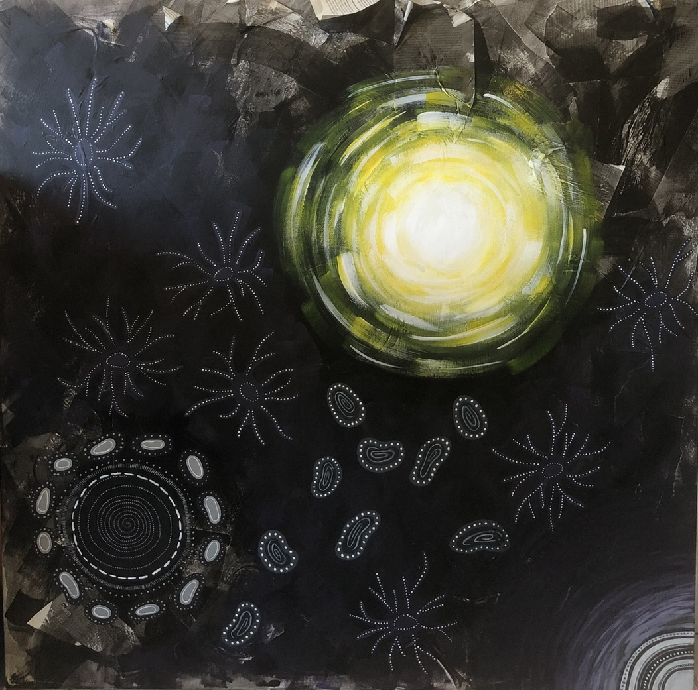

Sapere Aude
Cette toile a été commandée par la cheffe d’établissement de mon lycée pour décorer la bibliothèque, autour de la citation "Sapere aude" qu'on peut traduire par 'ose penser par toi-même'. Elle questionne la manière dont nos pensées se construisent, parfois de façon désordonnée, sur un socle d’informations et de savoirs. Les formes organiques représentent justement ce flot de pensées, difficile à organiser, tandis que les collages de journaux en arrière-plan symbolisent la matière grise, nourrie par l’actualité. L’œuvre explore le lien entre pensée personnelle et influence extérieure.